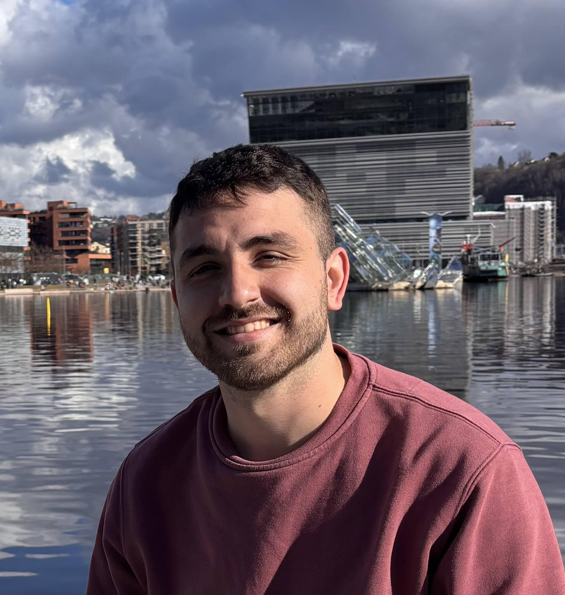

Investigador en Robòtica Manipulativa i Col·laborativa
Investigador en robòtica centrat en el desenvolupament de sistemes de manipulació basats en aprenentatge per a aplicacions al món real. Experiència en aprenentatge per imitació (imitation learning), aprenentatge per reforç (reinforcement learning) i en models de Visió-Llenguatge-Acció (VLA), amb èmfasi en la integració d'aquests mètodes en plataformes robòtiques físiques i entorns centrats en les persones.
Eurecat, Centre Tecnològic de Catalunya - Investigador en Robòtica (Setembre 2024 - Present)
Treball en aprenentatge de robots manipuladors, integrant aprenentatge per imitació, reforç i models VLA en sistemes robòtics reals.
Institut de Robòtica i Informàtica Industrial (IRI) - Becari INIREC (Octubre 2021 - Novembre 2022)
Projecte de recerca relacionat amb la realitat virtual utilitzant HTC Vive, càmeres ZED, Leap Motion i Unity.
UPC, ETSEIB, Barcelona (09/2018 - 06/2024)
• Doble màster en Enginyeria de Robòtica i Automàtica i Enginyeria Industrial
Nota mitjana: 9,02 amb matrícula d'honor en 12 assignatures.
Vilatzara, Vilassar de Mar (2012 - 2018)
• Batxillerat Tecnològic i Secundària (Primer curs cursat als EUA, 2016-2017).
• Nota mitjana de batxillerat: 9,51 (Matrícula d'Honor).
• PAU / Accés a la universitat: 12,386 (sobre 14).